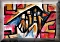

Karstgeologie

Allgemeine Informationen
Speläologie
Höhlenminerale
Karstgeologie
Höhlenbiologie
Berühmte Forscher
Höhlenbefahrung
Höhlenausrüstung
Fachbegriffe
Geologie
Archäologie
Bergbau
Bergbautechnik
Subterranea
Literatur
Historische Höhlen
Verschiedenes
Karst
Bedeckter Karst
Nackter Karst
Karbonatkarst
Sulfatkarst
Halogenkarst
Cenote
Doline
Estavelle
Oszillierende Quellen
Karren
Karstquelle
Karstsee
Naturbrücke
Polje
Ponor
Intermittierende Quelle
Steinerne Rinne
Trockental
Kalktuff
Vorfluter
Karst-Entwicklungsphasen
Höhlenruine
Turmkarst